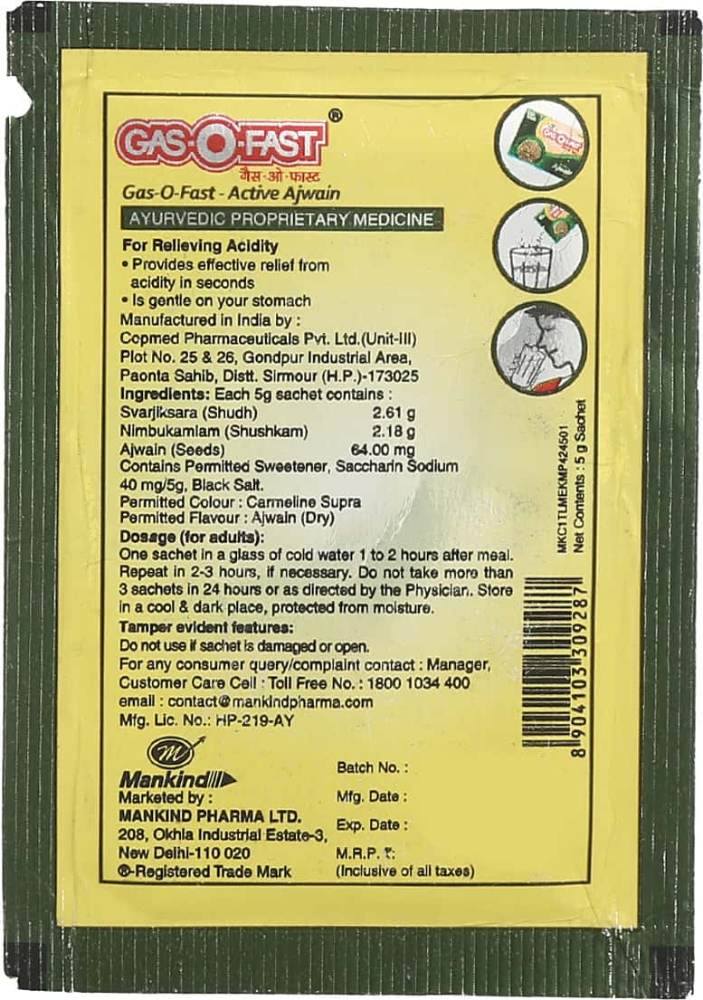
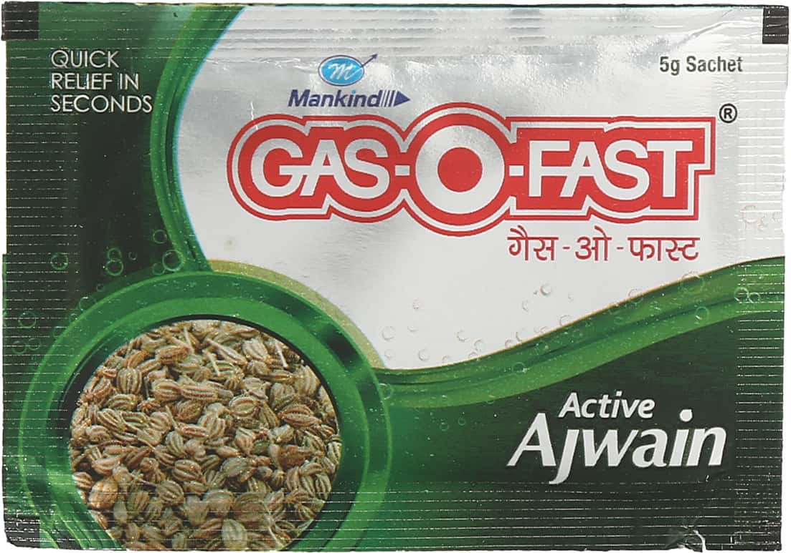

Gas-O-Fast Active Ajwain is an Ayurvedic proprietary medicine that provides fast relief from gas and acidity. It is manufactured by Mankind Pharma Ltd and is available in a 5g sachet.
The main ingredient of Gas-O-Fast Active Ajwain is ajwain, which is a traditional Indian spice that has been used for centuries to treat digestive problems. Ajwain is known for its carminative and anti-flatulent properties, which help to relieve gas and bloating. It also has anti-spasmodic properties, which help to relax the muscles of the digestive tract and reduce pain.
Gas-O-Fast Active Ajwain is a safe and effective treatment for gas and acidity. It is gentle on the stomach and does not cause any side effects. It is also convenient to take, as it comes in a single-dose sachet.
Take one sachet of Gas-O-Fast Active Ajwain after meals or as directed by your doctor.
Do not exceed the recommended dose.
If you are pregnant or nursing, consult your doctor before taking this product.
Keep out of reach of children.
Store in a cool, dry place.
This product is not intended to diagnose, treat, cure, or prevent any disease. The information provided on this page is for informational purposes only and should not be considered as medical advice. Please consult with a qualified healthcare professional before taking this or any other supplement.

